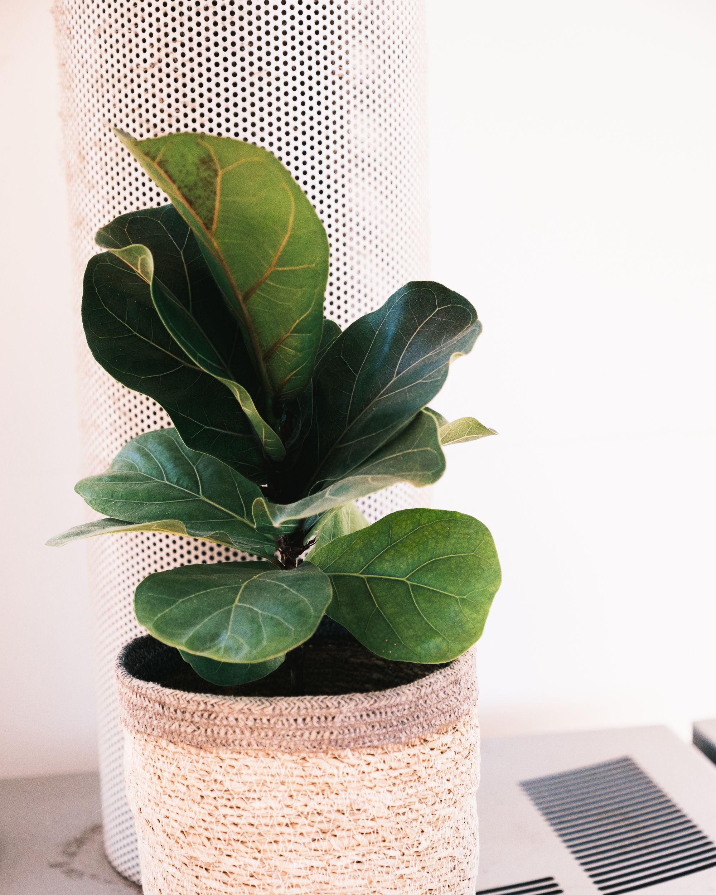

Peace Lily has beautiful green leaves and white flowers. It prefers indirect light and moist soil.
Difficulty: Medium

Fiddle Leaf Fig is a popular indoor plant with large leaves. It needs bright light and regular care.
Difficulty: Medium